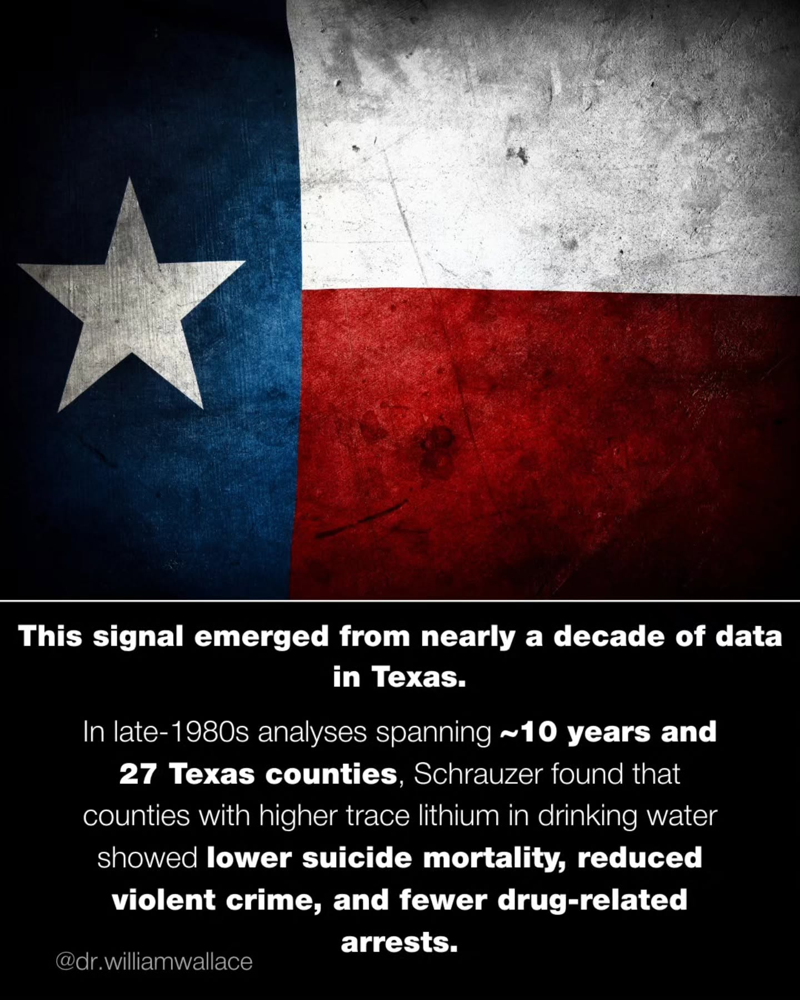
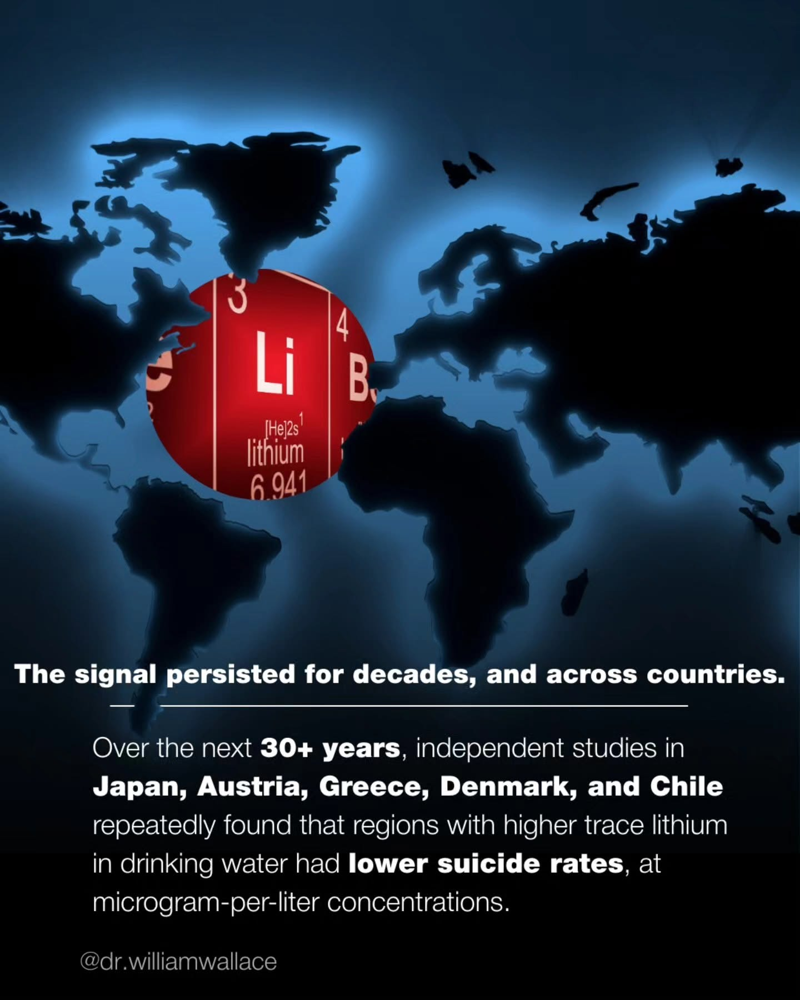
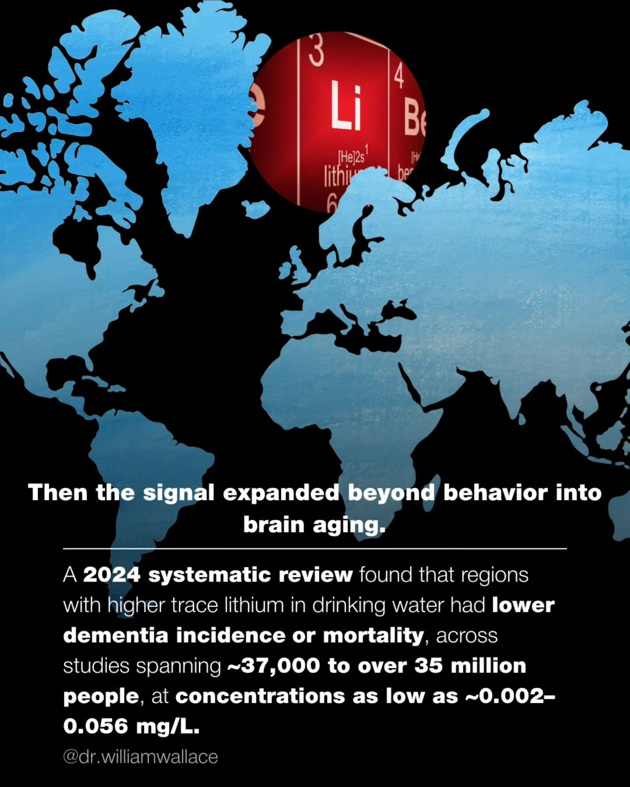
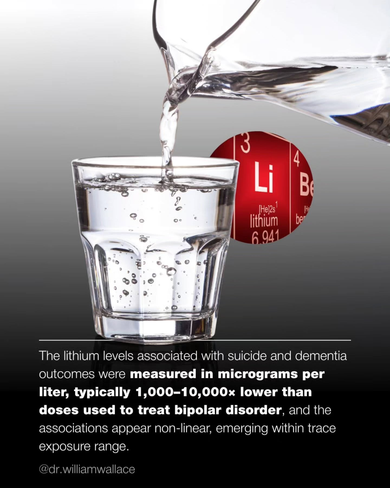

Harvard is beginning to start clinical trials to test low dose lithium as a treatment for Alzheimer’s. See this previous post for details: ↪ Harvard study ties lithium deficiency to Alzheimer's disease in mice and humans.
There has been observational evidence hinting at a protective effect against various neurological diseases for decades now.
#lithiumHD #alzheimersHD #dementiaHDaist
Lithium in drinking water has been linked to brain- and behavior-related outcomes for nearly half a century
The signal first emerged in the late 1970s and 1980s, when researchers analyzing U.S. county-level data (notably in Texas) observed that regions with naturally higher lithium concentrations in municipal water had lower rates of self-harm, violent crime, and drug-related arrests. These early ecological observations, collected across hundreds of counties over roughly a decade, were initially viewed as curiosities rather than mechanisms.
Over the 1990s and 2000s, similar population-level associations were reported in Japan, Austria, Greece, and the Nordic countries, again linking trace lithium exposure (µg/L range) to lower suicide rates, reinforcing that the signal was not geographically isolated.
In the 2010s, attention expanded beyond self-harm. Large registry-based studies and nationwide cohorts began reporting associations between long-term lithium exposure in drinking water and reduced dementia incidence, including Alzheimer’s disease, across millions of individuals and multi-year follow-up periods.
Importantly, these effects consistently appeared at environmental concentrations orders of magnitude below clinical lithium therapy, with non-linear and sometimes sex-specific patterns, arguing against simple pharmacologic explanations.
Today, the literature spans decades, continents, and outcomes. While the evidence remains observational, recent preclinical models and small clinical studies are now testing whether this persistent epidemiologic signal reflects true neurobiological effects of trace lithium exposure, rather than residual confounding.
This is not a treatment claim. It is the long arc of a reproducible environmental signal that science is now equipped to interrogate mechanistically.
PMID: 39212809
PMID: 35252091




